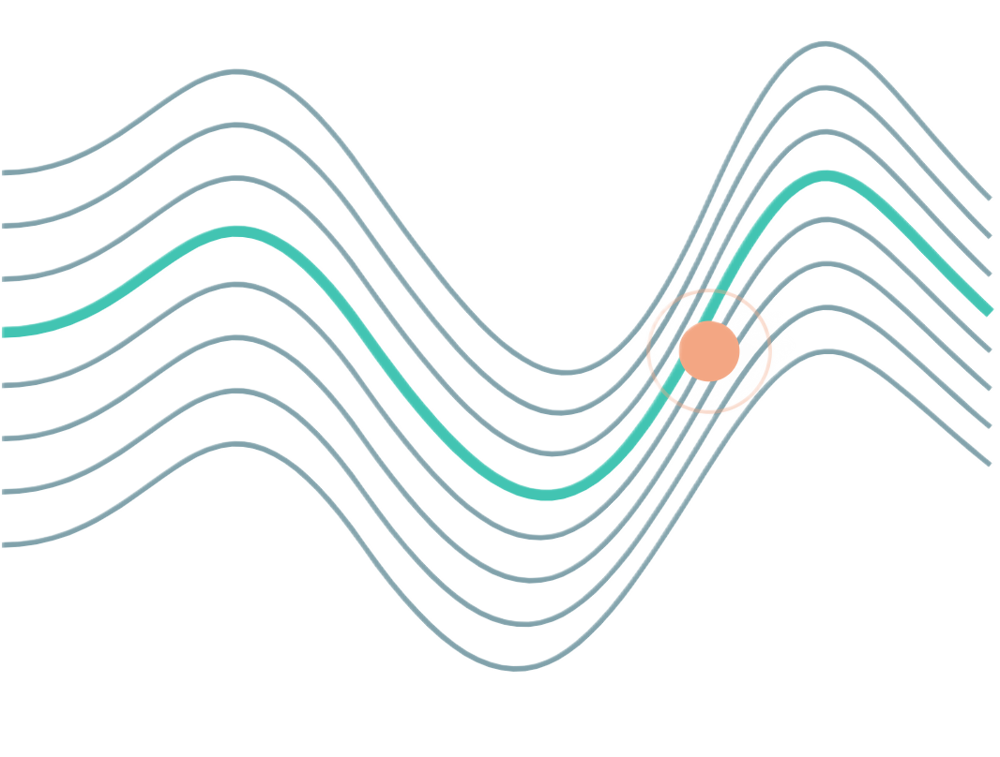
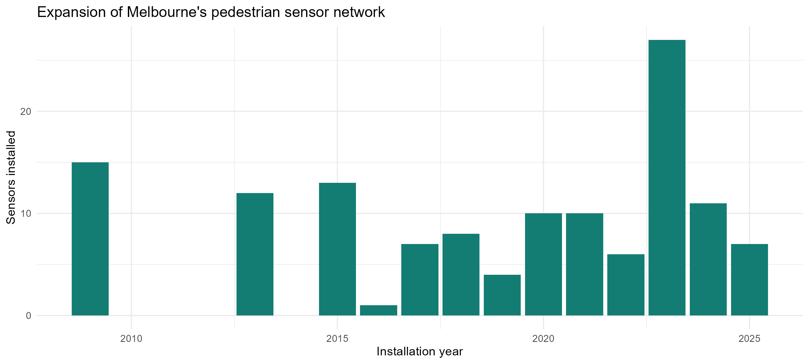
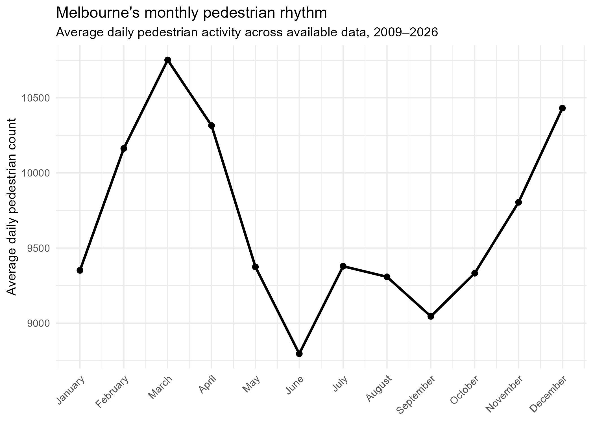
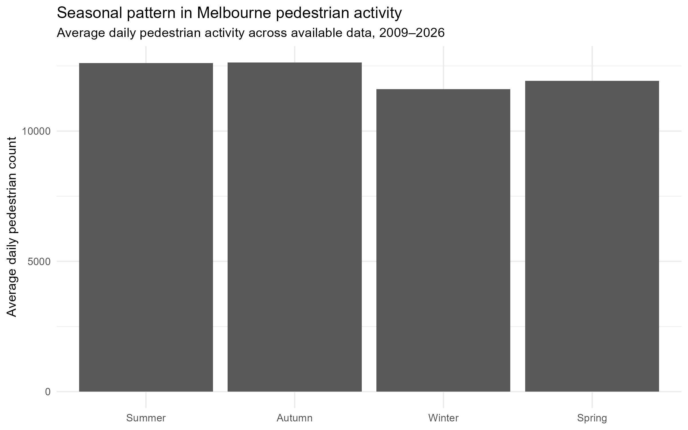
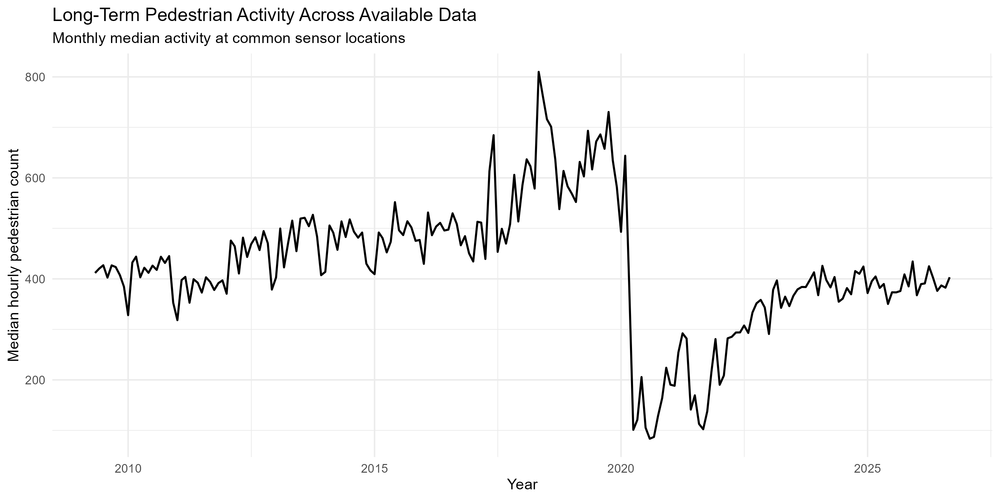
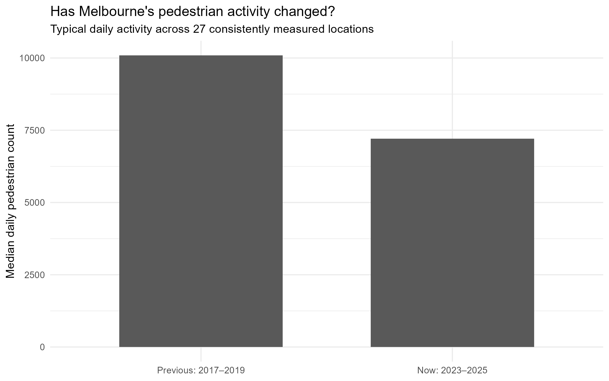
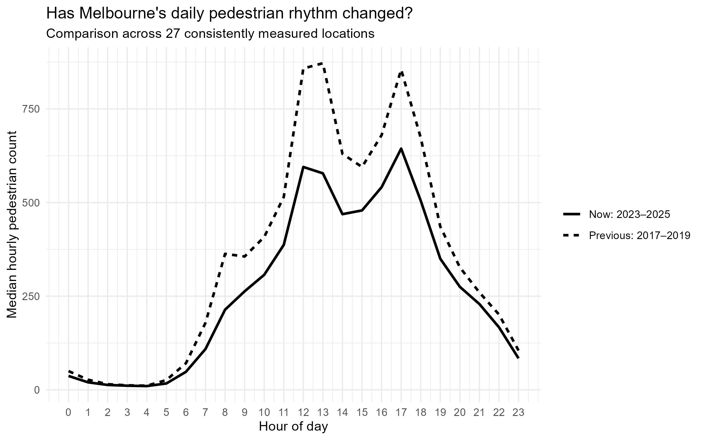
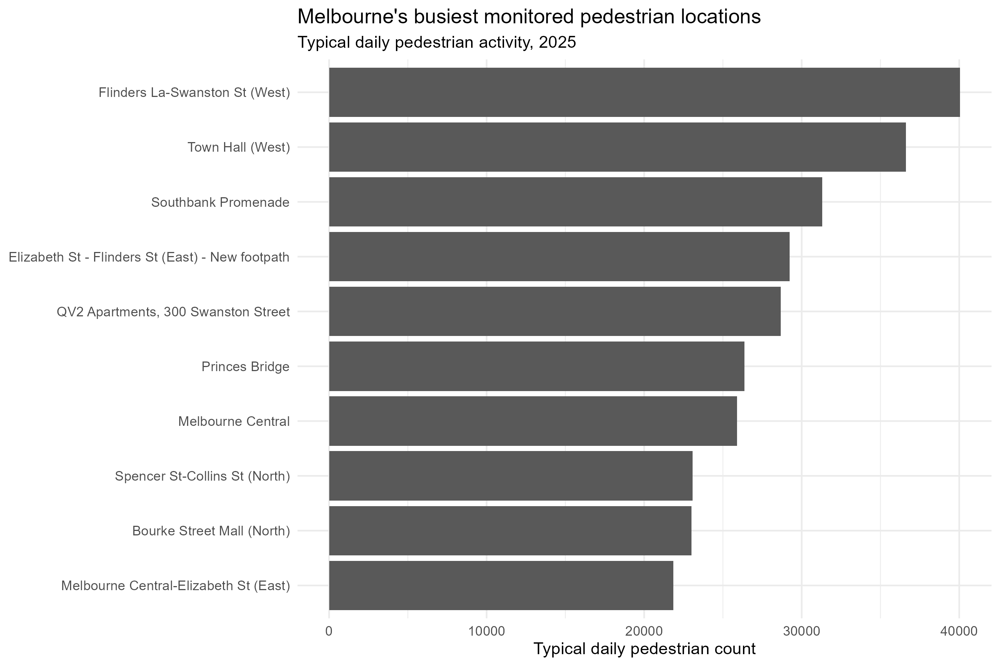
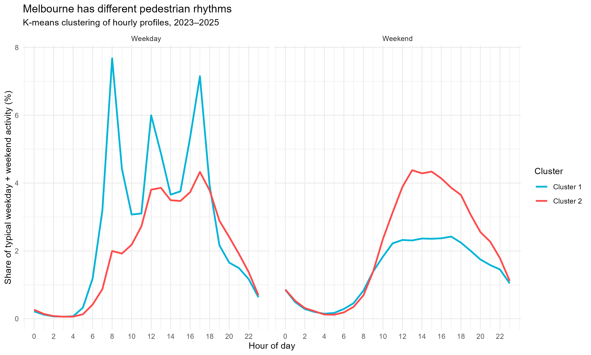

ETC5543 · BUSINESS ANALYTICS PROJECT
MONASH UNIVERSITY · 2026
PULSE OF
MELBOURNE
How does Melbourne move and how has that changed?
Exploring pedestrian rhythms, long-term changes and disruptions across the city.
PRESENTED BY
Richa Anghan 35760982 · Zhuo Zhang 35585994 · Nishta Bollavaram 35769378

CITY OF MELBOURNE · PEDESTRIAN COUNTING SYSTEM
RHYTHM / CHANGE / DISRUPTION
01 / THE MOTIVATION
PULSE OF MELBOURNE
A changing city needs more than just foot traffic numbers.
Pedestrian activity reveals when people use Melbourne, how patterns vary across locations, and how these patterns evolve over time.
01 / WHEN
Daily, weekly and seasonal pedestrian rhythms.
02 / WHERE
Locations experiencing important changes in activity.
03 / HOW IT CHANGES
Long-term shifts, disruptions and unusual periods.
OUR GOAL
Turn pedestrian counts into useful evidence for understanding Melbourne’s changing activity.
02 / DATA & PREPARATION
PULSE OF MELBOURNE
From raw records to reliable pedestrian data
01 / HISTORICAL
2009–2022
source: City of Melbourne
02 / CURRENT
2024-2026
source: City of Melbourne
03 / PROVIDED
2022–2025
Provided by City of Melbourne Data Operations Manager
STANDARDISE → REPAIR → VALIDATE → INTEGRATE
Standardised data formats · Reconstructed duplicated hour labels · Cross-checked overlapping records
pedestrian_full
7,523,688 hourly observations
May 2009 – October 2026
SUPPORTING DATASETS
Event permits · Public holidays · Daily weather · Sensor location metadata
03 / DATA COMPARABILITY
PULSE OF MELBOURNE
Melbourne’s expanding sensor network complicates historical comparisons.
New sensor installations expanded the monitoring network over time, making comparisons of raw city-wide pedestrian totals potentially misleading.

THE CHALLENGE
Additional monitored locations can contribute to higher recorded pedestrian totals.
OUR APPROACH
Sensor-level averages, normalised indices, coverage checks and matched sensors where appropriate.
Different parts required different comparison methods.
04 / TEMPORAL PATTERNS
PULSE OF MELBOURNE
Melbourne’s daily pulse follows a recognisable pattern.
KEY FINDING
Pedestrian activity varies throughout the day, with distinct periods of higher and lower activity.
05 / TEMPORAL PATTERNS
PULSE OF MELBOURNE
Melbourne’s pedestrian activity changes across the week.
KEY FINDING
Activity generally increases towards Friday and declines over the weekend, although the pattern varies between years.
06 / TEMPORAL PATTERNS
PULSE OF MELBOURNE
Melbourne’s pedestrian pulse also changes throughout the year.
Average daily pedestrian activity varies across months and seasons.


KEY FINDING
Monthly and seasonal differences provide important context for interpreting Melbourne’s pedestrian activity.
07 / LONG-TERM CHANGE
PULSE OF MELBOURNE
A major disruption reshaped Melbourne’s pedestrian activity.

BEFORE 2020
Generally increasing pedestrian activity.
2020–2021
Sharp decline during the pandemic period.
RECENT YEARS
Recovery, but below several earlier peaks.
08 / HISTORICAL COMPARISON
PULSE OF MELBOURNE
Pedestrian activity is lower, but the daily rhythm remains recognisable.


−28.5%
Change in median daily pedestrian count
10,091 → 7,211
Median daily count
2017–2019 vs 2023–2025
27 consistent locations
At least 300 observed days
in each comparison year
9 / SPATIAL ACTIVITY
PULSE OF MELBOURNE
Melbourne’s pedestrian pulse is concentrated in key locations.

2025 DATA · Median daily pedestrian count · At least 20 observed hours per day and 292 valid days per included location
KEY FINDING
Pedestrian activity varies considerably across monitored locations, with high counts around Flinders Lane, Town Hall and Southbank Promenade.
10 / PEDESTRIAN BEHAVIOUR
PULSE OF MELBOURNE
Melbourne’s locations follow two distinct pedestrian rhythms.

CLUSTER 1 · 9 SENSORS
Sharper weekday activity peaks.
CLUSTER 2 · 35 SENSORS
Broader daytime and relatively stronger weekend activity.
METHOD: 44 eligible sensors (2023–2025) · K-means clustering · 2 clusters selected using silhouette score (0.442)
11 / UNUSUAL ACTIVITY
PULSE OF MELBOURNE
Major pedestrian surges coincided with permitted city events.
22 FEBRUARY 2014
+51.7% median uplift
24 of 30 reporting sensors recorded at least 20% above expected activity.
11 EVENT-MATCHED DATES
Significant pedestrian surges overlapped with permitted events during 2014–2018.
12 / WEATHER & HOLIDAYS
PULSE OF MELBOURNE
Heavy rainfall and public holidays coincide with quieter pedestrian days.
HEAVY RAINFALL
24.7% vs 1.3%
Significant-dip rate on heavy-rain vs lighter-rain days.
PUBLIC HOLIDAYS
22 of 63 days
Public holidays with significant pedestrian declines.
ANALYSIS: 2019 and 2023–2026 · Significant dip: ≥20% median decline across sensors, with ≥30% of sensors declining by ≥20%.
13 / KEY TAKEAWAYS
PULSE OF MELBOURNE
Melbourne has a recognisable pulse, but not a single one.
Predictable patterns
Daily peaks, weekly cycles and seasonal variation shape pedestrian activity.
Long-term shifts
Median daily counts were 28.5% lower in 2023–2025 than in 2017–2019 at 27 consistently monitored locations.
Location matters
Pedestrian activity is concentrated at particular destinations, and locations show different weekday/weekend profiles.
Unusual days have context
Event permits, rainfall and public holidays coincide with notable changes in pedestrian activity.
WHAT THIS MEANS FOR THE CITY
Pedestrian planning should account for when, where and under what conditions people use Melbourne.
LIMITATIONS: Sensor coverage and comparability vary over time. Observed associations do not establish causation.